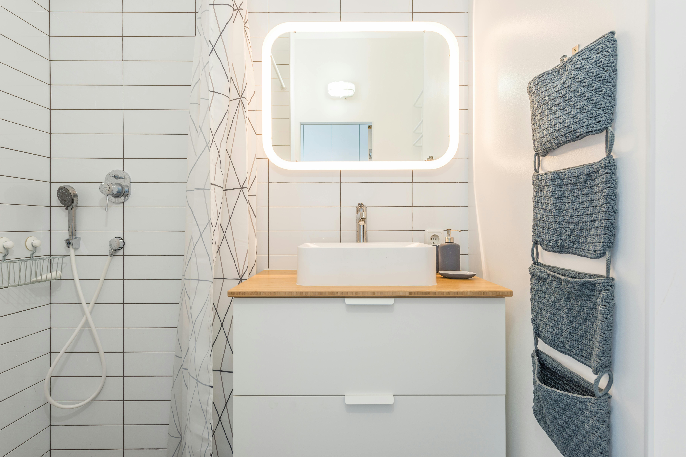

Tiny Bathroom Organization: 8 Space-Saving Hacks That Work
Small bathrooms can feel impossible to manage — limited shelves, overflowing counters, and nowhere to hide the essentials. The good news? With a few clever space-saving ideas, even the tiniest bathroom can look neat and function like a larger one. These renter-friendly hacks will help you create order without expensive renovations.

1. Go Vertical with Shelves & Racks
Empty walls are wasted storage. Add floating shelves above the toilet, install narrow racks, or use a tall shelving unit to keep towels and toiletries off the counter. Even a pegboard or hanging basket can turn blank space into useful storage.

2. Turn Cabinets into Organized Zones
Bathroom cabinets easily turn messy. Use clear bins, pull-out baskets, or tiered drawers to group products by category — haircare, skincare, or cleaning supplies. A few labels make it easy to grab what you need and keep the system in place.
3. Choose Multifunctional Storage Pieces
Every item should earn its spot in a small bathroom. A storage ladder can double as a towel rack and shelf, while benches or stools with hidden compartments store extra toilet paper, cleaning tools, or even small appliances like a washing machine or compact dryer, keeping everything organized and out of sight.

4. Clear Out What You Don’t Need
Expired products and duplicates take up valuable space. Build a quick weekly routine to declutter — toss what’s old, donate what you won’t use, and reorganize the rest. The fewer items you have, the easier it is to stay organized.

5. Use Hooks, Rods, and Over-the-Door Racks
Hooks and rods free up floor space instantly. Hang towels, robes, or baskets behind the door or on walls. For renters, adhesive hooks work great — they hold a lot of weight and can be removed without damage.
6. Bright Colors & Mirrors Create Space
Design matters for tiny bathrooms. Lighter paint colors, mirrored walls, and good lighting make the room feel larger and less crowded. If natural light is limited, add LED strips or wall-mounted fixtures to brighten things up.
7. Add a Rolling Cart for Flexible Storage
A slim rolling cart fits between tight spots — beside the toilet, next to the sink, or even in a corner. Store everyday items here for easy access, and roll it out of the way when not needed.
8. Simplify the Shower Area
Shower ledges get crowded fast. Use a hanging caddy, tension pole shelf, or stick-on corner organizer to corral shampoos and soaps vertically. This not only frees space but also keeps the shower looking neat.
Final Thoughts
Organizing a tiny bathroom is all about smart storage and consistency. Use vertical solutions, invest in multi-use pieces, and declutter often to keep your space functional. Even a few changes will make your bathroom feel calmer and more spacious.
← Back to Blog